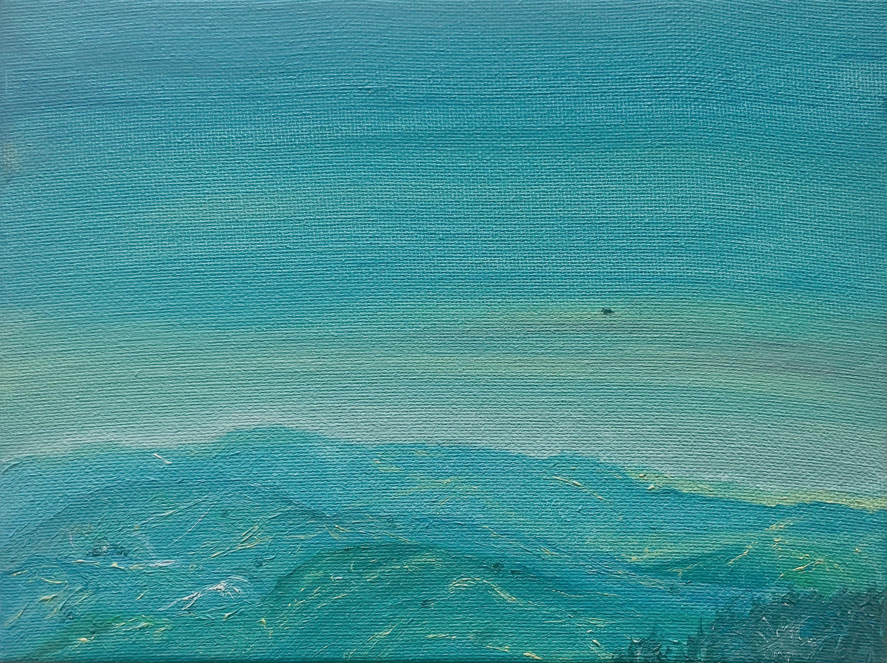

заглядывать в лица
scrutare i volti
peering into faces

заглядывать в лица прохожим,
ожидая чуда, или смерти
бродить по городу кругами,
искать в античных стенах бреши
перекладывать боль на других,
безответственно прыгая выше
я хотел бы слышать под утро,
как ты мерно мне в ухо дышишь.
scruto i volti dei passanti, in attesa
di un miracolo, o della morte,
vago per la città senza meta,
cercando brecce tra le mura antiche,
riverso il dolore sugli altri, e salto
sempre più in alto,
irresponsabilmente,
vorrei percepire, all'alba, il tuo
respiro tiepido accarezzarmi la pelle.
peering into strangers' faces,
awaiting a miracle or death,
wandering the city in circles,
seeking cracks in ancient walls,
shifting pain onto others, recklessly
leaping higher,
I only wish to hear, by morning,
your steady breathing in my ear.